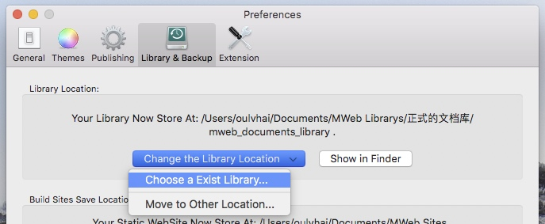

MWeb 3 release and what is difference between 3.x and 2.x.
For MWeb 2.x user:
- MWeb 2.x users also need to re-purchase, this is because the Mac App Store is not friendly for old users upgrade.
For out of Mac App Store users, if purchased from May 1, 2018 to July 3, 2018, you can contact me to change to 3.x version, notice that is Change, you 2.x will disable. - MWeb updates can't be avoided. It's free to upgrade MWeb from 1.x to 2.x. For MWeb development, 3.x will have to re-charge. The subscription method is indeed more appropriate, but MWeb will be converted to a subscription of at least $1.99 monthly, so the new version is actually more favorable. I think that even if the prices of the two versions add up, it is still very cheap compared to some of the products. The advantage of the buyout system is that you don't have to worry about renewal after you buy it, and you will have the feeling that you already have. I think this experience is very good.
- Regarding MWeb 2.x, maintenance is generally compatible with new systems. The plan is to do simple maintenance, but if it is too difficult to compatible the new system one day, it will be removed from sale. But for the current macOS system status (macOS Mojave), I think you can continue to use MWeb 2.x two or there years.
2.x User Data Migration
Document Library migration:
3.x will prompt you to import the old document library when you start. If you don't do this at first, or for any other reason, the solution is very simple. Copy the old document library to the location you want, and then use 3.x. Version of the Preferences - Library & Backup - Change the Library Location-Choose a Exist Library and then select that location:

If there are any problems, it is recommended to check this post: MWeb Document Library Details.
Other data migration:
- Publish service migration: update 2.x version to 2.3.0 and export the publishing service, and then import with 3.x. It should be noted that the Evernote Publishing Service cannot be imported and needs to be re-added.
- External Mode migration: need to re-add the external folder in 3.x.
Difference between 3.x and 2.x.
- 2.x version under High Sierra may have bugs that I can't reproduce. The classic problem is that the CPU is 100%. This 3.x is not there, because 3.x is rewritten. If you are using version 2.x and can reproduce this bug stably, please contact me.
- The 3.x version of the interface is based on EL Capitan, so it will be more modern and more reasonable, and the performance will be much better than the 2.x version. The interface is also completely redesigned by the designer [@Funpee] (https://armgod.com/).
- 3.x's Markdown parser is @randomatom to help with a lot of bug fixes and detail adjustments. For example, lists and code blocks don't force blank lines, which makes it more reasonable.
- 3.x added support mermaid, viz, echarts, plantuml These graph libraries.
- 3.x Custom Preview Styles no longer support the entire folder customization as in 2.x, only a single CSS file.
- The 3.x version replaced the code highlighting library when previewing and supported the line number. The difference with 2.x is that 2.x will try to highlight if the code language is not defined, and 3.x will not.
- 3.x The style of posting to Evernote no longer supports matching with various preview styles, the style cannot be changed, only the same as the mweb-default style.
- 3.x's full-text search has been optimized, it should be faster, and optimization will continue.
- 3.x Export images and PDFs Add a preview step.
- 3.x Added export to Epub, support for single document, select multiple documents and export the category to Epub. The exported Epub also supports LaTeX math formulas.
- Version 3.x Export HTML becomes a single file, the image is embedded in the HTML, and there is no longer the ability to export the entire category to HTML.
- 3.x version optimizes the custom drag sorting feature in the document library, not as confusing as 2.x.
- 3.x version When importing Markdown into the document library, if the entire folder is selected and the Markdown document has a local image, the image will also be imported, and the 2.x version will not import the image. When exporting to Markdown, version 3.x will generate a folder structure for the categories structure, and version 2.x will not.
- 3.x version of the new Quick Note feature, please check: Quick Note.
- The 3.x version has a new Quick Search feature. For details, please check: Quick Search.
- 3.x Mac App Store (MAS) version has iCloud support built in. The non-MAS version is the same as 2.x and is not processed. The difference between the 3.x MAS version and the non-MAS version is explained below.
- The 3.x version of the outline view is changed to pop-up. If it is to be fixed, it is required to be dragged and fixed, unlike the 2.x version of the sidebar.
- The 3.x version of the External Mode becomes a two-column mode, while 2.x is a three-column mode. More info: MWeb External Mode Details.
- Finally, the release of version 3.x is only the beginning, and will continue to be optimized in the future, while 2.x enters maintenance mode.
For more information on the 3.x version, check out [Help Documentation] (help.html).
Difference between MWeb 3 Mac App Store (MAS) version and non-MAS version
- If you need to sync data with iCloud and also use iOS version of MWeb, we suggestion that buy the MAS version.
- When the MAS version is first launch, it will automatically set the document library store to iCloud Drive. If it is store in iCloud Drive, it will automatically detect the document library in iCloud Drive. Non-MAS versions are manually selected.
- The MAS version moves the document library to iCloud Drive no need to manually choose the iCloud Drive MWeb library location.
- The non-MAS sync document library to iOS version is the same as the 2.x version, which is also to manually save the document library to iCloud Dirve/MWeb/mweb_documents_library. For details, please check: How to use MWeb for Mac Library in iOS
- The non-MAS version is currently not Sandbox app. The difference is:
- The non-MAS version can preview external markdown document that contain local image no need to add the folder to External Mode.
- Non-MAS version exporting PDF under Sierra also supports TOC, which are not supported by MAS version. Notice that both versions of EL Capitan and High Sierra support PDF TOC.